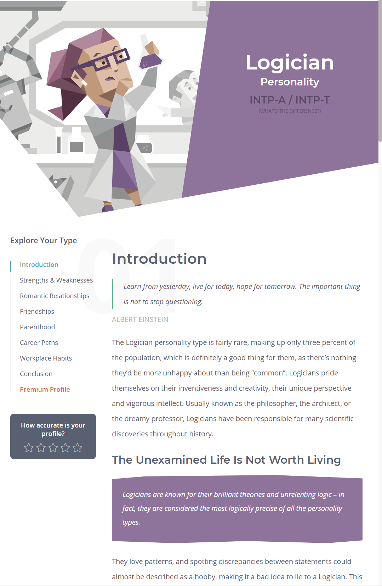
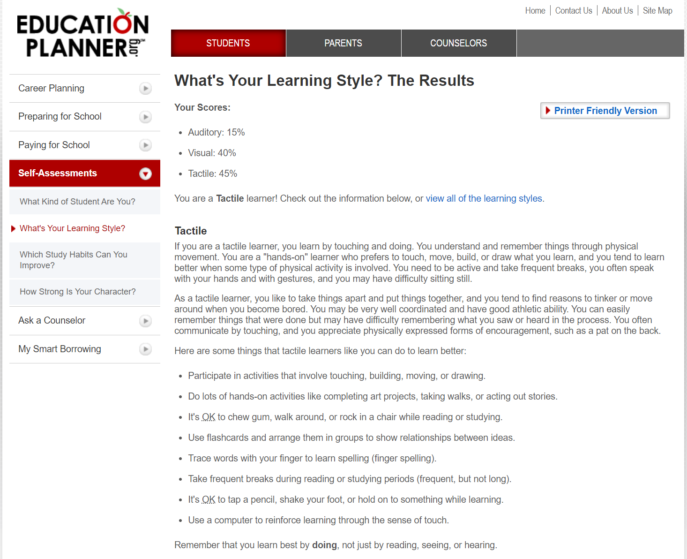
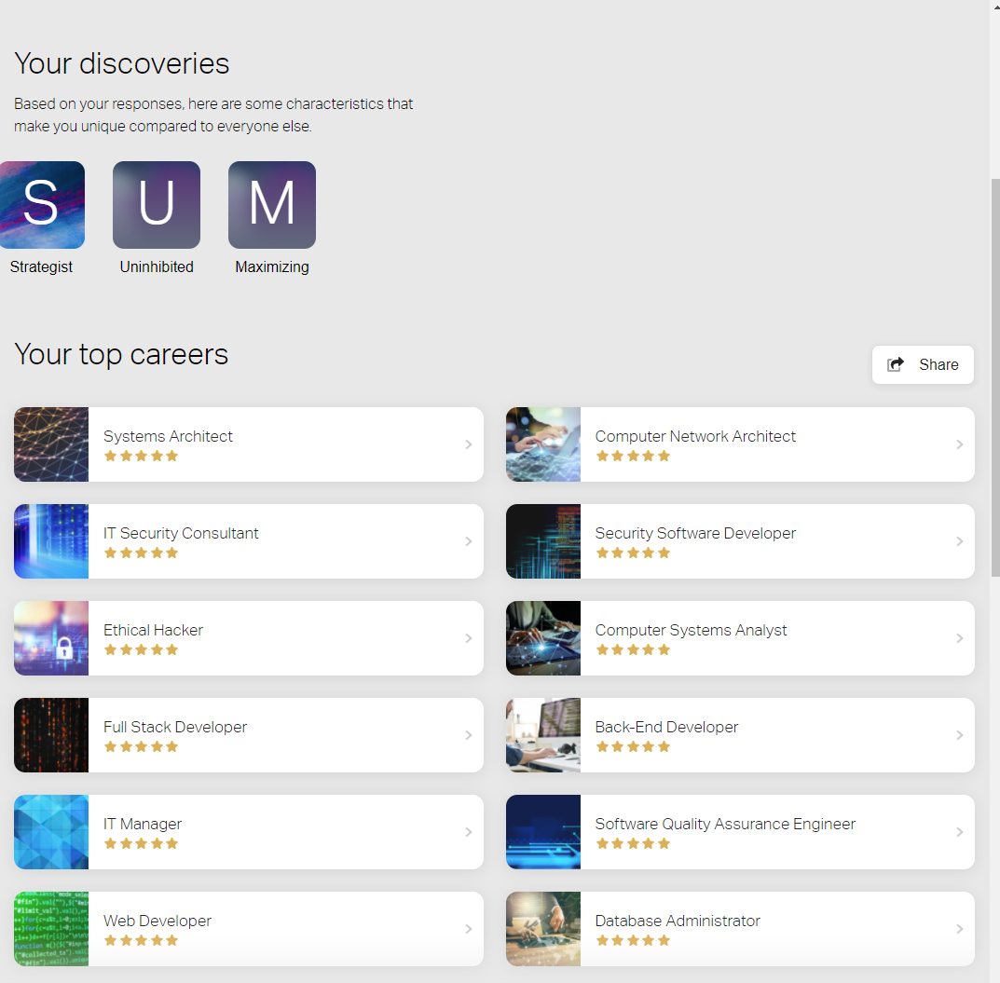

My profile
Personal Information
Name: Jackson Raphael
Student Number: s3884794
Student Email: S3884794@student.rmit.edu.au
Nationality: Australian
GitHub Repository: My GitHub Repository
GitHub Pages: My GitHub Pages
About Me
I’m from NSW and am currently studying online due to coronavirus.
As pets I keep a fish tank filled with guppies and my dog who is nearly 17 years old, I’ve had him since I was six after begging for a puppy every birthday since I could talk.
Outside of my pets I enjoy reading, playing games with friends and occasionally working on little games of my own.
I’ve worked on and off in construction since I was 16 however as I’ve gotten older, I’ve realized It’s not a career path I wish to continue down.

Interest in IT
I am studying IT because I’ve always been interested in tech, as a child I would get in trouble for downloading this or that on the family computer.
I remember being caught in the study at 2am one night after sneaking in to play a videogame on the computer.
I also used to create very simple little robots using parts given to me by my grandfather (electrical engineer) and parts I tore out of other things like remote controlled cars.
My uncle is a systems administrator and we made a very simple website in the mid-2000s which at the time I thought was incredible.
These days I enjoy making games in unity and learning more about programming.
I’ve chosen to study at RMIT because they were the only ones offering the pre-requisite courses I need during the 4th study period so I can start my bachelors locally at the beginning of next year. I’m hoping to learn about what will be expected of me as a university student and about the professional IT industry to help my planned career.
Ideal Job
I’ve learnt some programming and have messed about on the unity engine creating fun little projects and games.
I find programming to be far more creative than it gets credit for and I enjoy solving problems using it.
I would like to pursue this further and working in software would be my ideal job in the IT industry as I think it would present me with new challenges and be a rewarding career.
Analyst Programmer Job in Sydney - SEEK
This job seems to be relatively broad regarding the type of software I would be working on. I think it would be a challenging experience that would allow me to work on the front end and back end of projects.
This role would require a lot more experience and education than I currently have. I think I would need to complete my bachelors and get several years’ experience in the field, particularly in backend web applications.
Currently I only have some relevant TAFE courses under my belt and since my work has been in the trades that wouldn’t be relevant outside of the experience working in teams.
I can achieve these requirements through further university level study and hopefully get an internship that leads me to employment in the industry.
Profile
Myers-Briggs
My Myers-Briggs test results from https://www.16personalities.com/ put me as a logician.
I’m not a big believer in short questionnaires defining who we are as individuals so in truth these results don’t mean much to me.
I will try and work on some of the weaknesses I see in myself that match this personality type and I think for group work ideally a diverse number of personalities would help us to combine our strengths and mitigate our weaknesses.

Learning Style
The results of my online learning style test at What's Your Learning Style? (educationplanner.org) placed me as a tactile learner.
I can certainly agree with this one as I often struggle with listening to two-hour lectures without anything for me to do but listen.
I learn far better when given regular tasks and assignments to do and I find assignments etc. far easier If I’m first given a chance to “take things apart and put them back together again” from a related or similar project.
For example, practice exams or the previous years exams are very useful for me and I’ve always done better when provided with them.
In teams I think this could be useful as I’m willing to be pointed in the direction of something and then to jump in and try to learn it by doing it.

Career Path
The last test I did was an ideal career test at CareerExplorer.
The results were pretty much inline with what I had decided myself and all of them are in the IT field.
This is good for working in teams as I have a genuine interest in the projects we will be working on.
